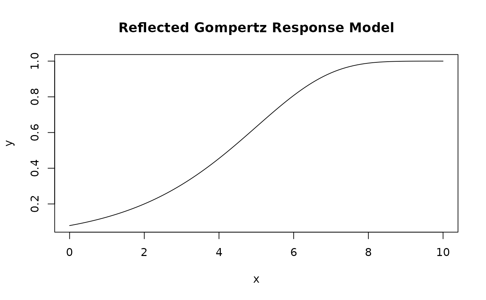

This function computes the reflected Gompertz response model for a given vector of x values.
It takes parameters b, c, d, and e to define the reflected Gompertz function.
Usage
rm_GompertzRef(x, b, c, d, e)
Arguments
- x
A numeric vector of x values.
- b
A numeric value representing the steepness of the curve.
- c
A numeric value representing the lower asymptote.
- d
A numeric value representing the upper asymptote.
- e
A numeric value representing the x-value of the sigmoid's midpoint.
Value
A numeric vector of the same length as x, representing the computed reflected Gompertz response values.
Details
The reflected Gompertz function is defined as:
$$y = c + (d - c) * (1 - exp(-exp( b * (-x + e))))$$
Examples
x_values <- seq(0, 10, by = 0.1)
b <- -0.5
c <- 0
d <- 1
e <- 5
result <- rm_GompertzRef(x_values, b, c, d, e)
plot(x_values, result, type = "l", main = "Reflected Gompertz Response Model", xlab = "x", ylab = "y")
